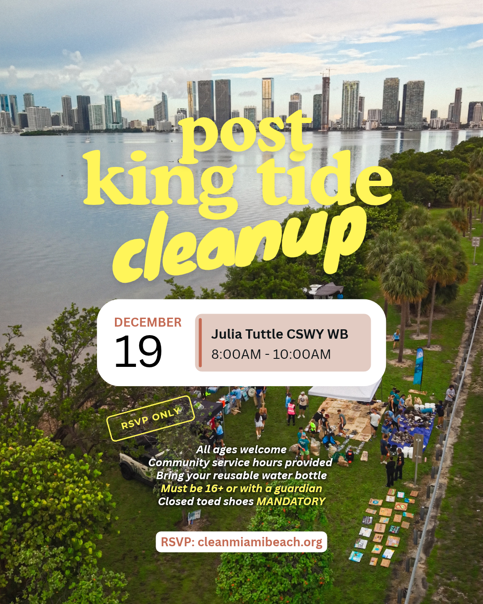

Events / Community cleanup
Julia Tuttle Causeway Shoreline Cleanup

Saturday, December 19, 2026
8:00 AM–10:00 AM Eastern
Julia Tuttle Causeway, westbound
King tides have left a wave of trash along the shoreline. Join us to help protect our bay. RSVP required at cleanmiamibeach.org. Wear closed-toe shoes and bring a reusable water bottle. Volunteers under 16 must be accompanied by a guardian. Community service hours are available. Check RSVP information for the precise meeting point.